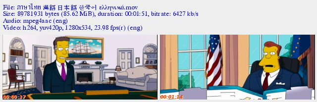
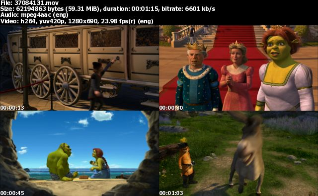
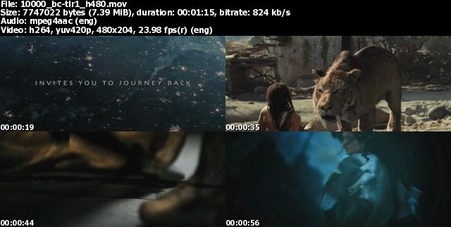
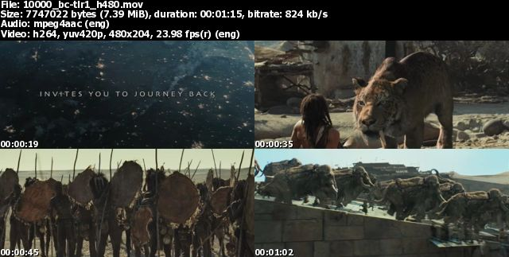

movie thumbnailer (mtn) -- saves thumbnails (screenshots) of
movie or video files to jpeg files. It uses FFmpeg's libavcodec
as its engine, so it supports all popular codecs, e.g. divx h264
mpeg1 mpeg2 mp4 vc1 wmv xvid, and formats, e.g. .3gp .avi .dat
.mkv .wmv. mtn is open source software. It should run on all
operating systems which have gcc, FFmpeg, and GD, for example,
Linux and Windows.
mtn works similar to "mplayer -benchmark -nosound -quiet
-zoom -vf scale=420:-3,tile=2:2 -vo jpeg:outdir=. -sstep 60
file.avi". but sstep and framestep options didn't work
very well for me.
mtn comes with ABSOLUTELY NO WARRANTY. This is free software,
and you are welcome to redistribute it under certain conditions;
for details see file gpl-2.0.txt.
For project information, please visit SourceForge
project summary page
Features:
- Super fast! Thanks to FFmpeg's libavcodec.
- Command line program: can be used on remote
connections to co-location servers, or used in scripts.
- Batch mode: recursively search directories for movie
files.
- Run at lower priority (nice 10 on Linux, idle on Windows)
by default. To run at normal priority use -n option.
- Thumbnails are group together in one jpeg file and can be
saved individually too (-I option).
- Work fine with Unicode filenames in both Linux &
Windows (might need to change the font with -f fontfile).

- Blank screen detection & evasion: so instead of
getting blank shots:
 ,
,
we can get (with -b 0.6 option):

- Edge detection & blur evasion: so instead of
getting blur (no edge) shots:
,
we can get (with -D6 option): (not perfect yet)

(trailers taken from yahoo,
pocketmovies,
gamershell
)
- Update mode: (-W option) omits files that already
have thumbnails
- Save file info (name, size, length, codecs) to a text file
(-N option)
- Seek and non-seek mode: automatically selected and can be overridden. (-z and -Z option) Seek mode is much faster while non-seek mode is good for small time step or small clips. *new*
- These file formats should be supported: .3gp, .3g2, .asf,
.avi, .dat, .divx, .dsm, .evo, .flv, .m1v, .m2ts, .m2v, .m4a,
.mj2, .mjpg, .mjpeg, .mkv, .mov, .moov, .mp4, .mpg, .mpeg,
.mpv, .nut, .ogg, .ogm, .qt, .swf, .ts, .vob, .wmv, .xvid. I
haven't tried them all though. :)
Download & Installation
Current version: 200808a. What's news? See
changelog.txt. For older releases,
please visit download
page.
- Linux & Others
- Windows:
-
mtn Windows binary & dll files & source code --
all in one package; get this one if you dont know
which one to download :)
- separate packages-- can be upgraded independently.
-
- GUI
-
- Movie 'Batch' Thumbnailer FrontEnd:
version 0.1 developed by illuminati -- super
cool!! :), or
- Movie Thumbnailer Front-End & source code:
version 0.44 developed by illuminati -- also super
cool!! :)
- put or unzip the GUI in the same directory as mtn.exe
- Unicode TrueType font (optional): Bitstream
Cyberbit -- has 29,934 glyphs
Usage:
mtn is a command-line program so its usage will mostly be done
in a shell or command prompt. It has many options, the more
frequently used ones are:
-w width : width of output image- If you want the thumbnails to have 3 columns and 10 rows,
use:
-c 3 -r 10
- Or if you want to have 5 columns and have a shot every 65
seconds, use:
-c 5 -s 65
-r rows will override -s
seconds if used together- If not overridden, the defaults are used:
-w 1024
-c 3 -s 120
- In Windows, you can run mtn.exe from command prompt or drag
files/dirs from Windows explorer and drop them on mtn.exe. You
can change the default options by creating a shortcut to
mtn.exe and add options there (right click the shortcut ->
Properties -> Target); then drop files/dirs on the shortcut
instead.
- In Linux & others, you'll probably need to change the
TrueType font path (
-f fontfile). The
default is set to tahomabd.ttf which might not exist in
non-Windows systems. If you dont have a TrueType font, you can
turn the text off by using -i -t.
- Files which have Unicode names, e.g. in Thai Chinese
Japanese Korean Greek, do work fine with mtn in both Linux and
Windows (as of version 0.61). You need to tell which TrueType
font to use though (
-f fontfile).
ARIALUNI.TTF and Cyberbit.ttf
seem like good ones.
For more information, see detailed
usage.
Support & Contact:
mtn is developed by tuit (tuitfun); though most of its
magic is done by FFmpeg
libraries. For support & contact, please use one of the
forums.
Special Thanks:
Help needed:
- My programming skill is very rusty and i am new to
libavcodec, so if you can help, please do! :)
- For bugs & future plans, please see todo.txt and the source code.
- I cannot do GUI, if you can help please let me know.
Links:
- XnView is an efficient
multimedia viewer, browser and converter. Highly configurable
too!
- MinGW: Minimalist GNU
for Windows -- compile unix software natively in Windows
- VirtualBox: x86
virtualization products -- run Windows in Linux and vice
versa
- wxWidgets: a
cross-platform GUI toolkit
- Image
Grabber: my favorite thumbnail maker when mtn didn't exist
:)
- MPEG4 Modifier: Modifies MPEG4-ASP AVIs (aspect ratio, userdata, packed bitstream) without re-encoding.